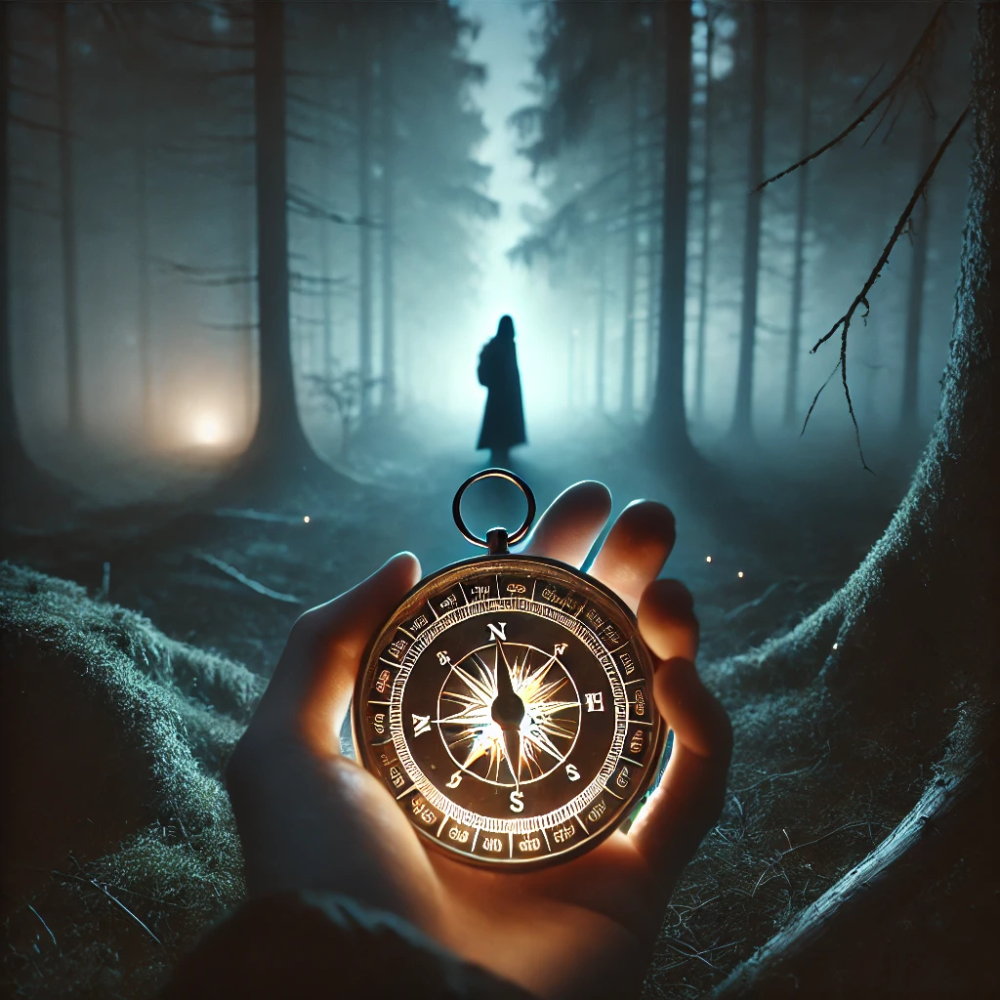

Holding the compass in your hands, you feel its energy surge. The glyphs on its surface glow faintly, responding to your intent. You wonder if this artifact is truly as powerful as it seems, or if its magic is shaped by your own beliefs.
You take a step forward, letting the compass guide you. The needle spins momentarily before pointing toward a faint light in the distance. The path it suggests is unclear, yet you feel its pull. The forest around you grows quiet, as though waiting for you to act.
“The compass can show the way,” a voice whispers, “but it is your steps that bring meaning to the path.”
How will you test the compass’s power?

What will you do next?